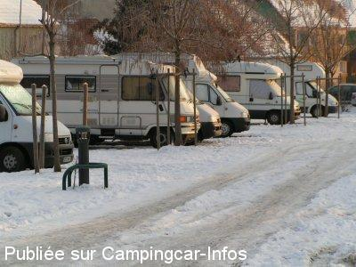

ACS = Aire de services sur camping acceptant le passage pour les services de :
OBERNAI
(N° 395)
Accès/adresse :
1 rue de Berlin
Camping municipal Le Vallon de l'Ehn ***
67210 OBERNAI
Camping municipal Le Vallon de l'Ehn ***
67210 OBERNAI
Latitude : (Nord) 48.46476° Décimaux ou 48° 27′ 53′′
Longitude : (Est) 7.46794° Décimaux ou 7° 28′ 4′′
Tarif : 2015
Emplacement : 5,70 à 5,90 €
Personne + 13 ans : 4,50 à 4.75 €
Enfant - 13 ans : 2,50 €
Électricité 16 A : 4,50 €
Animal : 1,20 €
Taxe de séjour + 13 ans : 0,20 €
Services C-C de passage : 2 €
Type de borne : EURO-RELAIS
Services :


Accès handicapés
Lave-linge
Sèche-linge
Jeux enfants
Piscine olympique à côté
Épicerie
Boissons
Pain (mai à octobre)
Autres informations :
Ouvert à l'année
30 emplacements stabilisés
Tel : +33 (0) 388 953 848
camping@obernai.fr
http://www.tourisme-obernai.fr/Fr/Loger/Camping-municipal-Obernai.html
Le 03/08/2010 par Fanfan

Le 02/02/2005 par Camping Obernai
de
Michel F.
le 12/06/2015 :
Accepte la carte de réduction basse saison ACSI (16€)+Taxes
Très bon camping bien entretenu, après des emplacements stabilisés
Pour les week-end hors saison, il est conseillé de réserver
Accepte la carte de réduction basse saison ACSI (16€)+Taxes
Très bon camping bien entretenu, après des emplacements stabilisés
Pour les week-end hors saison, il est conseillé de réserver
de
momo294
le 07/08/2013 :
super camping tres bon accueil
sanitaires propres tarifs raisonnables
centre ville a 15minutes a pied
un camping comme on les aime
je recommande
super camping tres bon accueil
sanitaires propres tarifs raisonnables
centre ville a 15minutes a pied
un camping comme on les aime
je recommande
de
sylvia
le 29/11/2012 :
Chers visiteurs,
Le camping municipal d'Obernai vous informe qu'à compter de 2013, une période de fermeture de mi-janvier à mi-mars sera instaurée.
Ceci nous permettra d'effectuer les travaux d'entretien nécessaires au bon fonctionnement de notre infrastructure afin de pouvoir préparer la saison et vous accueillir dans des conditions optimales durant les 10 mois d'ouverture du camping.
Nous vous rappelons que le camping est ouvert tout le mois de décembre pour vous permettre de découvrir le marché de Noël gastronomique d'Obernai, les traditions de l'Avent et les autres marchés de Noël en Alsace, ou vous accueillir pour les fêtes de Noël et de Nouvel An.
En vous remerciant de votre compréhension, nous vous souhaitons de passer d'heureuses fêtes de fin d'année et espérons avoir le plaisir de vous accueillir prochainement au Vallon de l'Ehn.
Chaleureuses salutations
Sylvia, Caroline et Julien
Chers visiteurs,
Le camping municipal d'Obernai vous informe qu'à compter de 2013, une période de fermeture de mi-janvier à mi-mars sera instaurée.
Ceci nous permettra d'effectuer les travaux d'entretien nécessaires au bon fonctionnement de notre infrastructure afin de pouvoir préparer la saison et vous accueillir dans des conditions optimales durant les 10 mois d'ouverture du camping.
Nous vous rappelons que le camping est ouvert tout le mois de décembre pour vous permettre de découvrir le marché de Noël gastronomique d'Obernai, les traditions de l'Avent et les autres marchés de Noël en Alsace, ou vous accueillir pour les fêtes de Noël et de Nouvel An.
En vous remerciant de votre compréhension, nous vous souhaitons de passer d'heureuses fêtes de fin d'année et espérons avoir le plaisir de vous accueillir prochainement au Vallon de l'Ehn.
Chaleureuses salutations
Sylvia, Caroline et Julien
de
SZYMANSKI Francis
le 01/05/2011 :
Bonjour,
Avons passé le W.E. de Pâques sur cet agréable camping, emplacements stabilisés, sanitaires très propres malgrè la forte fréquentation. Accueil particulièrement chaleureux.
Bonjour,
Avons passé le W.E. de Pâques sur cet agréable camping, emplacements stabilisés, sanitaires très propres malgrè la forte fréquentation. Accueil particulièrement chaleureux.
de
patrice02
le 16/09/2010 :
Nous avons passé 2 nuits sur ce camping où l'accueil est très sympa et où la boulangère est présente entre 8h30 et 9h sans avoir à passer de commande. Le centre ville est proche, on peut s'y rendre à pied facilement.
Nous avons passé 2 nuits sur ce camping où l'accueil est très sympa et où la boulangère est présente entre 8h30 et 9h sans avoir à passer de commande. Le centre ville est proche, on peut s'y rendre à pied facilement.
de
Robert
le 14/08/2009 :
Le camping d'OBERNAI étant full pour les CC en cette saison, quelle ne fut pas notre surprise de trouver derrière ce camping un parking situé dans un rond-point derrière une école municipale et ouvert aux CC pendant juillet et août ! En effet, les barrières à 2 m étaient grandes ouvertes et il s'y trouvait plein de CC et aucune interdiction que maximum 24h et que les vidanges doivent s'effectuer au camping juste derrière (normal).
Cependant, l'endroit n'étant pas du tout plat mais en légère et même forte pente à certains endroits, les cales et mises à niveau sont indispensables.
Endroit calme et parfait pour un halte dans cette charmante et bien coquette petite ville de charme.
Encore un bel exemple de ville ouverte aux CC et qui favorise le tourisme. Merci à Obernai, j'y reviendrai car non seulement un très bel endroit, mais aussi bons restos, bons vins! Je n'y ai malheuresement pas pensé à photographier cet endroit pour vous le présenter, mais à recommander vivement en juillet et août pendant les congés scolaires du moins et si la prochaine fois ce sera de nouveau pareil. Donc très grand parking situé au rond-point juste derrière le camping. Merci à la ville d'Obernai.
Le camping d'OBERNAI étant full pour les CC en cette saison, quelle ne fut pas notre surprise de trouver derrière ce camping un parking situé dans un rond-point derrière une école municipale et ouvert aux CC pendant juillet et août ! En effet, les barrières à 2 m étaient grandes ouvertes et il s'y trouvait plein de CC et aucune interdiction que maximum 24h et que les vidanges doivent s'effectuer au camping juste derrière (normal).
Cependant, l'endroit n'étant pas du tout plat mais en légère et même forte pente à certains endroits, les cales et mises à niveau sont indispensables.
Endroit calme et parfait pour un halte dans cette charmante et bien coquette petite ville de charme.
Encore un bel exemple de ville ouverte aux CC et qui favorise le tourisme. Merci à Obernai, j'y reviendrai car non seulement un très bel endroit, mais aussi bons restos, bons vins! Je n'y ai malheuresement pas pensé à photographier cet endroit pour vous le présenter, mais à recommander vivement en juillet et août pendant les congés scolaires du moins et si la prochaine fois ce sera de nouveau pareil. Donc très grand parking situé au rond-point juste derrière le camping. Merci à la ville d'Obernai.
de
Annie
le 29/02/2008 :
PRICES 2008
Special hard standing pitches for campers
1 pitch for 1 night, 2 persons no electricity : 12,70 euros (with electricity 16 amp : 16,40 euros)
Free access to sanitary and service point
Free Hotspot Wifi
PRICES 2008
Special hard standing pitches for campers
1 pitch for 1 night, 2 persons no electricity : 12,70 euros (with electricity 16 amp : 16,40 euros)
Free access to sanitary and service point
Free Hotspot Wifi
de
Patrice
le 05/11/2007 :
Nous avons passé 3 nuits dans ce camping et je confirme l'excellent accueil, la possibilité de se rendre en ville par un bus dont l'arrêt est à cinquante mètre de l'entrée.
Les sanitaires chauffés sont très propres, les emplacements bien conçus, mais en période de vacances il vaut mieux réserver.
Nous avons passé 3 nuits dans ce camping et je confirme l'excellent accueil, la possibilité de se rendre en ville par un bus dont l'arrêt est à cinquante mètre de l'entrée.
Les sanitaires chauffés sont très propres, les emplacements bien conçus, mais en période de vacances il vaut mieux réserver.
de
Jean-Luc
le 10/01/2007 :
De passage le 1 janvier pour vidanger, je confirme bonne organisation à l'accueil malgré un jour férié! 2€ le jeton. Par contre, pour les personnes à mobilité réduite, ce camping est un peu loin du centre à pied (compter 2km).
De passage le 1 janvier pour vidanger, je confirme bonne organisation à l'accueil malgré un jour férié! 2€ le jeton. Par contre, pour les personnes à mobilité réduite, ce camping est un peu loin du centre à pied (compter 2km).
de
jacky
le 09/01/2007 :
Nous y avons passé la nuit du réveillon, très bon accueil et très propre. Apéritif offert par les patrons, pas loin de la ville.
Nous y avons passé la nuit du réveillon, très bon accueil et très propre. Apéritif offert par les patrons, pas loin de la ville.
de
Laurent59
le 03/08/2005 :
Accueil formidable, camping très bien tenu. Le camping vend des places à tarif réduit pour la piscine municipale en plein air qui se trouve à 300m à pied.
Accueil formidable, camping très bien tenu. Le camping vend des places à tarif réduit pour la piscine municipale en plein air qui se trouve à 300m à pied.